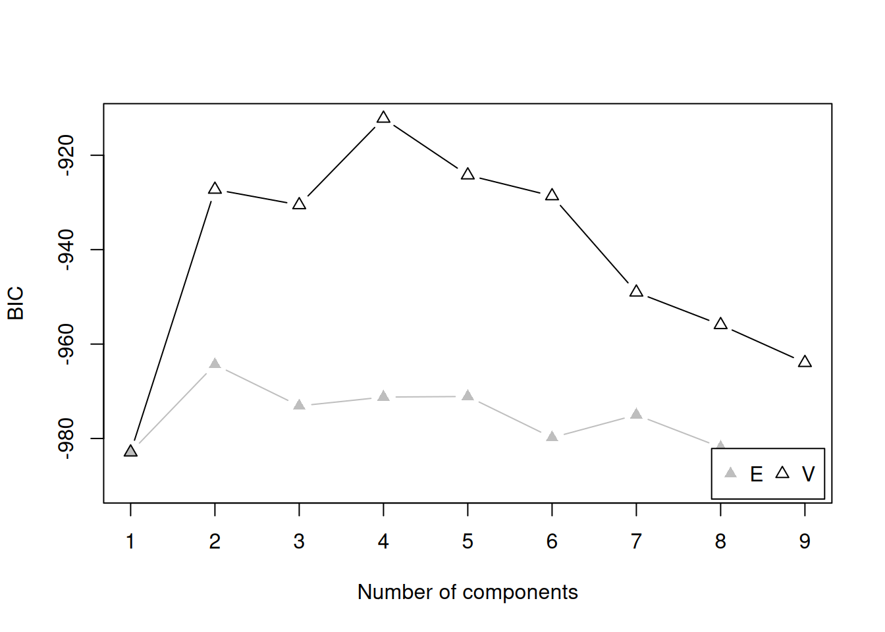
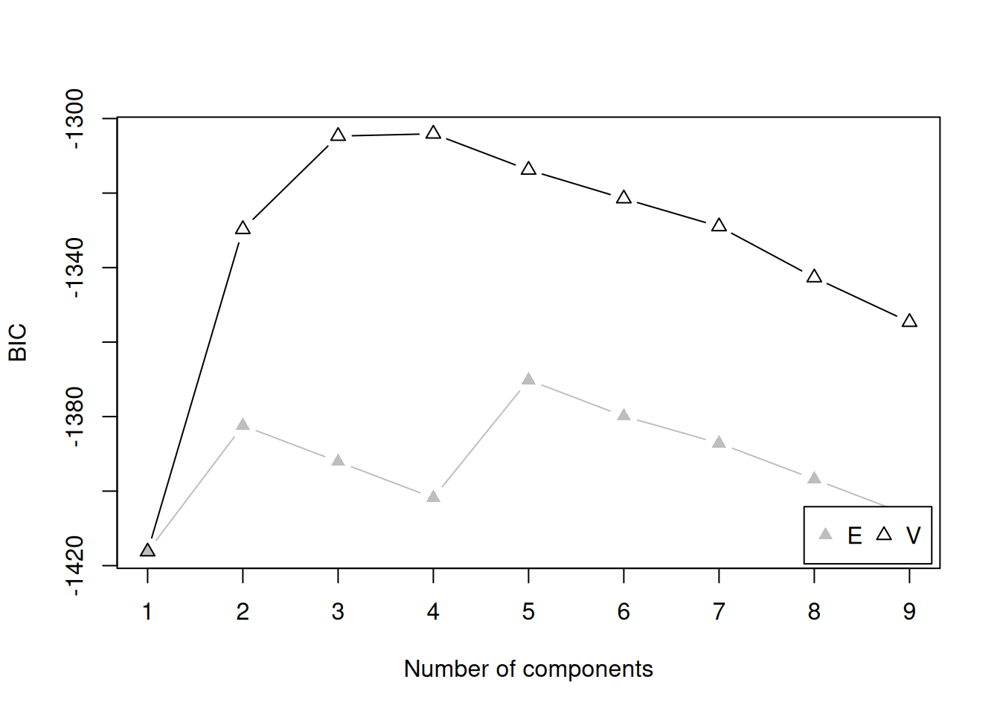
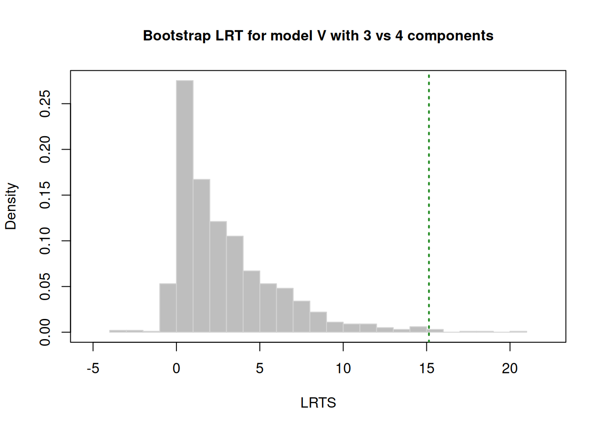

I want your feedback to make the book better for you and other readers. If you find typos, errors, or places where the text may be improved, please let me know. The best ways to provide feedback are by GitHub or hypothes.is annotations.
Opening an issue or submitting a pull request on GitHub: https://github.com/isaactpetersen/Fantasy-Football-Analytics-Textbook
Adding an annotation using hypothes.is.
To add an annotation, select some text and then click the
symbol on the pop-up menu.
To see the annotations of others, click the
symbol in the upper right-hand corner of the page.
20 Cluster Analysis
20.1 Getting Started
20.1.1 Load Packages
20.1.2 Load Data
20.1.3 Overview
Whereas factor analysis evaluates how variables do or do not hang together—in terms of their associations and non-associations, cluster analysis evaluates how people are or or not similar—in terms of their scores on one or more variables. The goal of cluster analysis is to identify distinguishable subgroups of people. The people within a subgroup are expected to be more similar to each other than they are to people in other subgroups. For instance, we might expect that there are distinguishable subtypes of Wide Receivers: possession, deep threats, and slot-type Wide Receivers. Possession Wide Receivers tend to be taller and heavier, with good hands who catch the ball at a high rate. Deep threat Wide Receivers tend to be fast. Slot-type Wide Receivers tend to be small, quick, and agile. In order to identify these clusters of Wide Receivers, we might conduct a cluster analysis with variables relating to the players’ height, weight, percent of (catchable) targets caught, air yards received, and various metrics from the National Football League (NFL) Combine, including their times in the 40-yard dash, 20-yard shuttle run, and three cone drill.
There are many approaches to cluster analysis, including model-based clustering, density-based clustering, centroid-based clustering, hierarchical clustering (aka connectivity-based clustering), etc. An overview of approaches to cluster analysis in R is provided by Kassambara (2017). In this chapter, we focus on examples using model-based clustering with the mclust package (Scrucca et al., 2023), which uses Gaussian finite mixture modeling. The various types of mclust models are provided here: https://mclust-org.github.io/mclust/reference/mclustModelNames.html.
20.1.4 Tiers of Prior Season Fantasy Points
20.1.4.1 Prepare Data
Code
[1] 2023Code
player_stats_seasonal_offense_recent <- player_stats_seasonal %>%
filter(season == recentSeason) %>%
filter(position_group %in% c("QB","RB","WR","TE"))
player_stats_seasonal_offense_recentQB <- player_stats_seasonal_offense_recent %>%
filter(position_group == "QB")
player_stats_seasonal_offense_recentRB <- player_stats_seasonal_offense_recent %>%
filter(position_group == "RB")
player_stats_seasonal_offense_recentWR <- player_stats_seasonal_offense_recent %>%
filter(position_group == "WR")
player_stats_seasonal_offense_recentTE <- player_stats_seasonal_offense_recent %>%
filter(position_group == "TE")20.1.4.2 Identify the Optimal Number of Tiers by Position
20.1.4.2.1 Quarterbacks
Code
Bayesian Information Criterion (BIC):
E V
1 -1003.1739 -1003.1739
2 -969.9747 -948.2264
3 -978.7935 -945.1457
4 -981.3619 -938.0253
5 -990.1507 -949.1264
6 -985.2384 -961.0139
7 -988.2083 -963.9640
8 -996.9990 -974.5630
9 -991.9542 -985.9481
Top 3 models based on the BIC criterion:
V,4 V,3 V,2
-938.0253 -945.1457 -948.2264 Best BIC values:
V,4 V,3 V,2
BIC -938.0253 -945.145680 -948.2264
BIC diff 0.0000 -7.120384 -10.2011
Code
Integrated Complete-data Likelihood (ICL) criterion:
E V
1 -1003.1739 -1003.1739
2 -973.2894 -954.7750
3 -1052.9192 -957.0398
4 -1053.7941 -947.0387
5 -1076.4310 -961.5372
6 -1080.9352 -989.5764
7 -1077.4745 -985.7520
8 -1092.8528 -991.9345
9 -1087.3713 -999.5436
Top 3 models based on the ICL criterion:
V,4 V,2 V,3
-947.0387 -954.7750 -957.0398 Best ICL values:
V,4 V,2 V,3
ICL -947.0387 -954.775034 -957.03983
ICL diff 0.0000 -7.736319 -10.00112
Code
tiersQB_boostrap <- mclust::mclustBootstrapLRT(
data = player_stats_seasonal_offense_recentQB$fantasyPoints,
modelName = "V") # variable/unequal variance (for univariate data)
numTiersQB <- as.numeric(summary(tiersQB_boostrap)[,"Length"][1]) # or could specify the number of teams manually
tiersQB_boostrap-------------------------------------------------------------
Bootstrap sequential LRT for the number of mixture components
-------------------------------------------------------------
Model = V
Replications = 999
LRTS bootstrap p-value
1 vs 2 68.13089 0.001
2 vs 3 16.26406 0.003
3 vs 4 20.30373 0.002
4 vs 5 2.08224 0.534
20.1.4.2.2 Running Backs
Code
Bayesian Information Criterion (BIC):
E V
1 -1782.627 -1782.627
2 -1711.492 -1644.547
3 -1721.605 -1616.735
4 -1716.604 -1603.824
5 -1726.701 -1605.815
6 -1736.797 -1621.023
7 -1724.416 -1632.489
8 -1734.512 -1642.516
9 -1713.319 -1657.425
Top 3 models based on the BIC criterion:
V,4 V,5 V,3
-1603.824 -1605.815 -1616.735 Best BIC values:
V,4 V,5 V,3
BIC -1603.824 -1605.815293 -1616.73521
BIC diff 0.000 -1.990827 -12.91075
Code
Integrated Complete-data Likelihood (ICL) criterion:
E V
1 -1782.627 -1782.627
2 -1719.075 -1667.789
3 -1878.928 -1654.432
4 -1878.834 -1642.374
5 -1982.539 -1636.166
6 -2021.769 -1665.660
7 -1988.509 -1692.219
8 -2020.196 -1681.704
9 -2012.945 -1726.370
Top 3 models based on the ICL criterion:
V,5 V,4 V,3
-1636.166 -1642.374 -1654.432 Best ICL values:
V,5 V,4 V,3
ICL -1636.166 -1642.373643 -1654.43164
ICL diff 0.000 -6.207432 -18.26543
The model-based bootstrap clustering of Running Backs’ fantasy points is unable to run due to an error:
Thus, we cannot use the following code, which would otherwise summarize the model results, specify the number of tiers, and plot model comparisons:
20.1.4.2.3 Wide Receivers
Code
Bayesian Information Criterion (BIC):
E V
1 -2471.492 -2471.492
2 -2392.220 -2345.420
3 -2403.093 -2311.206
4 -2393.793 -2311.058
5 -2404.635 NA
6 -2415.466 NA
7 -2399.516 NA
8 -2410.356 NA
9 -2401.250 NA
Top 3 models based on the BIC criterion:
V,4 V,3 V,2
-2311.058 -2311.206 -2345.420 Best BIC values:
V,4 V,3 V,2
BIC -2311.058 -2311.2064360 -2345.42033
BIC diff 0.000 -0.1479841 -34.36188
Code
Integrated Complete-data Likelihood (ICL) criterion:
E V
1 -2471.492 -2471.492
2 -2403.467 -2391.202
3 -2631.957 -2373.020
4 -2622.979 -2402.523
5 -2769.787 NA
6 -2859.127 NA
7 -2782.991 NA
8 -2830.362 NA
9 -2825.306 NA
Top 3 models based on the ICL criterion:
V,3 V,2 V,4
-2373.020 -2391.202 -2402.523 Best ICL values:
V,3 V,2 V,4
ICL -2373.02 -2391.20158 -2402.52344
ICL diff 0.00 -18.18181 -29.50367
Code
tiersWR_boostrap <- mclust::mclustBootstrapLRT(
data = player_stats_seasonal_offense_recentWR$fantasyPoints,
modelName = "V") # variable/unequal variance (for univariate data)
numTiersWR <- as.numeric(summary(tiersWR_boostrap)[,"Length"][1]) # or could specify the number of teams manually
tiersWR_boostrap-------------------------------------------------------------
Bootstrap sequential LRT for the number of mixture components
-------------------------------------------------------------
Model = V
Replications = 999
LRTS bootstrap p-value
1 vs 2 142.32029 0.001
2 vs 3 50.46219 0.001
3 vs 4 16.39629 0.003
20.1.4.2.4 Tight Ends
Code
Bayesian Information Criterion (BIC):
E V
1 -1260.169 -1260.169
2 -1215.361 -1190.813
3 -1225.026 -1170.432
4 -1234.698 -1175.238
5 -1220.548 -1186.239
6 -1219.179 -1196.909
7 -1228.848 -1202.941
8 -1238.592 -1214.896
9 -1248.213 -1222.066
Top 3 models based on the BIC criterion:
V,3 V,4 V,5
-1170.432 -1175.238 -1186.239 Best BIC values:
V,3 V,4 V,5
BIC -1170.432 -1175.237575 -1186.23910
BIC diff 0.000 -4.805739 -15.80726
Code
Integrated Complete-data Likelihood (ICL) criterion:
E V
1 -1260.169 -1260.169
2 -1221.676 -1216.683
3 -1361.049 -1205.327
4 -1438.081 -1223.003
5 -1423.891 -1236.280
6 -1391.645 -1248.686
7 -1428.558 -1241.746
8 -1459.351 -1249.834
9 -1500.949 -1254.242
Top 3 models based on the ICL criterion:
V,3 V,2 E,2
-1205.327 -1216.683 -1221.676 Best ICL values:
V,3 V,2 E,2
ICL -1205.327 -1216.68330 -1221.67588
ICL diff 0.000 -11.35599 -16.34858
Code
tiersTE_boostrap <- mclust::mclustBootstrapLRT(
data = player_stats_seasonal_offense_recentTE$fantasyPoints,
modelName = "V") # variable/unequal variance (for univariate data)
numTiersTE <- as.numeric(summary(tiersTE_boostrap)[,"Length"][1]) # or could specify the number of teams manually
tiersTE_boostrap-------------------------------------------------------------
Bootstrap sequential LRT for the number of mixture components
-------------------------------------------------------------
Model = V
Replications = 999
LRTS bootstrap p-value
1 vs 2 83.841186 0.001
2 vs 3 34.865788 0.001
3 vs 4 9.679202 0.046
4 vs 5 3.483417 0.328
20.1.4.3 Fit the Cluster Model to the Optimal Number of Tiers
20.1.4.3.1 Quarterbacks
In our data, all of the following models are equivalent—i.e., they result in the same unequal variance model with a 4-cluster solution—but they arrive there in different ways.
Code
mclust::Mclust(
data = player_stats_seasonal_offense_recentQB$fantasyPoints,
G = numTiersQB,
)
mclust::Mclust(
data = player_stats_seasonal_offense_recentQB$fantasyPoints,
G = 4,
)
mclust::Mclust(
data = player_stats_seasonal_offense_recentQB$fantasyPoints,
)
mclust::Mclust(
data = player_stats_seasonal_offense_recentQB$fantasyPoints,
x = tiersQB_bic
)Let’s fit one of these:
Here are the number of players that are in each of the four clusters (i.e., tiers):
20.1.4.3.2 Running Backs
Here are the number of players that are in each of the four clusters (i.e., tiers):
20.1.4.3.3 Wide Receivers
Here are the number of players that are in each of the four clusters (i.e., tiers):
20.1.4.3.4 Tight Ends
Here are the number of players that are in each of the four clusters (i.e., tiers):
20.1.4.4 Plot the Tiers
We can merge the player’s classification into the dataset and plot each player’s classification.
20.1.4.4.1 Quarterbacks
Code
player_stats_seasonal_offense_recentQB$tier <- clusterModelQBs$classification
player_stats_seasonal_offense_recentQB <- player_stats_seasonal_offense_recentQB %>%
mutate(
tier = factor(max(tier, na.rm = TRUE) + 1 - tier)
)
player_stats_seasonal_offense_recentQB$position_rank <- rank(
player_stats_seasonal_offense_recentQB$fantasyPoints * -1,
na.last = "keep",
ties.method = "min")
plot_qbTiers <- ggplot2::ggplot(
data = player_stats_seasonal_offense_recentQB,
mapping = aes(
x = fantasyPoints,
y = position_rank,
color = tier
)) +
geom_point(
aes(
text = player_display_name # add player name for mouse over tooltip
)) +
scale_y_continuous(trans = "reverse") +
coord_cartesian(clip = "off") +
labs(
x = "Projected Points",
y = "Position Rank",
title = "Quarterback Fantasy Points by Tier",
color = "Tier") +
theme_classic() +
theme(legend.position = "top")
ggplotly(plot_qbTiers)20.1.4.4.2 Running Backs
Code
player_stats_seasonal_offense_recentRB$tier <- clusterModelRBs$classification
player_stats_seasonal_offense_recentRB <- player_stats_seasonal_offense_recentRB %>%
mutate(
tier = factor(max(tier, na.rm = TRUE) + 1 - tier)
)
player_stats_seasonal_offense_recentRB$position_rank <- rank(
player_stats_seasonal_offense_recentRB$fantasyPoints * -1,
na.last = "keep",
ties.method = "min")
plot_rbTiers <- ggplot2::ggplot(
data = player_stats_seasonal_offense_recentRB,
mapping = aes(
x = fantasyPoints,
y = position_rank,
color = tier
)) +
geom_point(
aes(
text = player_display_name # add player name for mouse over tooltip
)) +
scale_y_continuous(trans = "reverse") +
coord_cartesian(clip = "off") +
labs(
x = "Projected Points",
y = "Position Rank",
title = "Running Back Fantasy Points by Tier",
color = "Tier") +
theme_classic() +
theme(legend.position = "top")
ggplotly(plot_rbTiers)20.1.4.4.3 Wide Receivers
Code
player_stats_seasonal_offense_recentWR$tier <- clusterModelWRs$classification
player_stats_seasonal_offense_recentWR <- player_stats_seasonal_offense_recentWR %>%
mutate(
tier = factor(max(tier, na.rm = TRUE) + 1 - tier)
)
player_stats_seasonal_offense_recentWR$position_rank <- rank(
player_stats_seasonal_offense_recentWR$fantasyPoints * -1,
na.last = "keep",
ties.method = "min")
plot_wrTiers <- ggplot2::ggplot(
data = player_stats_seasonal_offense_recentWR,
mapping = aes(
x = fantasyPoints,
y = position_rank,
color = tier
)) +
geom_point(
aes(
text = player_display_name # add player name for mouse over tooltip
)) +
scale_y_continuous(trans = "reverse") +
coord_cartesian(clip = "off") +
labs(
x = "Projected Points",
y = "Position Rank",
title = "Wide Receiver Fantasy Points by Tier",
color = "Tier") +
theme_classic() +
theme(legend.position = "top")
ggplotly(plot_wrTiers)20.1.4.4.4 Tight Ends
Code
player_stats_seasonal_offense_recentTE$tier <- clusterModelTEs$classification
player_stats_seasonal_offense_recentTE <- player_stats_seasonal_offense_recentTE %>%
mutate(
tier = factor(max(tier, na.rm = TRUE) + 1 - tier)
)
player_stats_seasonal_offense_recentTE$position_rank <- rank(
player_stats_seasonal_offense_recentTE$fantasyPoints * -1,
na.last = "keep",
ties.method = "min")
plot_teTiers <- ggplot2::ggplot(
data = player_stats_seasonal_offense_recentTE,
mapping = aes(
x = fantasyPoints,
y = position_rank,
color = tier
)) +
geom_point(
aes(
text = player_display_name # add player name for mouse over tooltip
)) +
scale_y_continuous(trans = "reverse") +
coord_cartesian(clip = "off") +
labs(
x = "Projected Points",
y = "Position Rank",
title = "Tight End Fantasy Points by Tier",
color = "Tier") +
theme_classic() +
theme(legend.position = "top")
ggplotly(plot_teTiers)20.1.5 Types of Wide Receivers
Code
# Compute Advanced PFR Stats by Career
pfrVars <- nfl_advancedStatsPFR_seasonal %>%
select(pocket_time.pass:cmp_percent.def, g, gs) %>%
names()
weightedAverageVars <- c(
"pocket_time.pass",
"ybc_att.rush","yac_att.rush",
"ybc_r.rec","yac_r.rec","adot.rec","rat.rec",
"yds_cmp.def","yds_tgt.def","dadot.def","m_tkl_percent.def","rat.def"
)
recomputeVars <- c(
"drop_pct.pass", # drops.pass / pass_attempts.pass
"bad_throw_pct.pass", # bad_throws.pass / pass_attempts.pass
"on_tgt_pct.pass", # on_tgt_throws.pass / pass_attempts.pass
"pressure_pct.pass", # times_pressured.pass / pass_attempts.pass
"drop_percent.rec", # drop.rec / tgt.rec
"rec_br.rec", # rec.rec / brk_tkl.rec
"cmp_percent.def" # cmp.def / tgt.def
)
sumVars <- pfrVars[pfrVars %ni% c(
weightedAverageVars, recomputeVars,
"merge_name", "loaded.pass", "loaded.rush", "loaded.rec", "loaded.def")]
nfl_advancedStatsPFR_career <- nfl_advancedStatsPFR_seasonal %>%
group_by(pfr_id, merge_name) %>%
summarise(
across(all_of(weightedAverageVars), ~ weighted.mean(.x, w = g, na.rm = TRUE)),
across(all_of(sumVars), ~ sum(.x, na.rm = TRUE)),
.groups = "drop") %>%
mutate(
drop_pct.pass = drops.pass / pass_attempts.pass,
bad_throw_pct.pass = bad_throws.pass / pass_attempts.pass,
on_tgt_pct.pass = on_tgt_throws.pass / pass_attempts.pass,
pressure_pct.pass = times_pressured.pass / pass_attempts.pass,
drop_percent.rec = drop.rec / tgt.rec,
rec_br.rec = drop.rec / tgt.rec,
cmp_percent.def = cmp.def / tgt.def
)
uniqueCases <- nfl_advancedStatsPFR_seasonal %>% select(pfr_id, merge_name, gsis_id) %>% unique()
uniqueCases %>%
group_by(pfr_id) %>%
filter(n() > 1)Code
nfl_advancedStatsPFR_seasonal <- nfl_advancedStatsPFR_seasonal %>%
filter(pfr_id != "WillMa06" | merge_name != "MARCUSWILLIAMS" | !is.na(gsis_id))
nfl_advancedStatsPFR_career <- left_join(
nfl_advancedStatsPFR_career,
nfl_advancedStatsPFR_seasonal %>% select(pfr_id, merge_name, gsis_id) %>% unique(),
by = c("pfr_id", "merge_name")
)
# Compute Player Stats Per Season
player_stats_seasonal_careerWRs <- player_stats_seasonal %>%
filter(position == "WR") %>%
group_by(player_id) %>%
summarise(
across(all_of(c("targets", "receptions", "receiving_air_yards")), ~ weighted.mean(.x, w = games, na.rm = TRUE)),
.groups = "drop")
# Drop players with no receiving air yards
player_stats_seasonal_careerWRs <- player_stats_seasonal_careerWRs %>%
filter(receiving_air_yards != 0) %>%
rename(
targets_per_season = targets,
receptions_per_season = receptions,
receiving_air_yards_per_season = receiving_air_yards
)
# Merge
playerListToMerge <- list(
nfl_players %>% select(gsis_id, display_name, position, height, weight),
nfl_combine %>% select(gsis_id, vertical, forty, ht, wt),
player_stats_seasonal_careerWRs %>% select(player_id, targets_per_season, receptions_per_season, receiving_air_yards_per_season) %>%
rename(gsis_id = player_id),
nfl_actualStats_offense_career %>% select(player_id, receptions, targets, receiving_air_yards, air_yards_share, target_share) %>%
rename(gsis_id = player_id),
nfl_advancedStatsPFR_career %>% select(gsis_id, adot.rec, rec.rec, brk_tkl.rec, drop.rec, drop_percent.rec)
)
merged_data <- playerListToMerge %>%
reduce(
full_join,
by = c("gsis_id"),
na_matches = "never")Additional processing:
Code
merged_data <- merged_data %>%
mutate(
height_coalesced = coalesce(height, ht),
weight_coalesced = coalesce(weight, wt),
receptions_coalesced = pmax(receptions, rec.rec, na.rm = TRUE),
receiving_air_yards_per_rec = receiving_air_yards / receptions
)
merged_data$receiving_air_yards_per_rec[which(merged_data$receptions == 0)] <- 0
merged_dataWRs <- merged_data %>%
filter(position == "WR")
merged_dataWRs_cluster <- merged_dataWRs %>%
filter(receptions_coalesced >= 100) %>% # keep WRs with at least 100 receptions
select(gsis_id, display_name, vertical, forty, height_coalesced, weight_coalesced, adot.rec, drop_percent.rec, receiving_air_yards_per_rec, brk_tkl.rec, receptions_per_season) %>% #targets_per_season, receiving_air_yards_per_season, air_yards_share, target_share
na.omit()20.1.5.1 Identify the Number of WR Types
Code
Bayesian Information Criterion (BIC):
EII VII EEI VEI EVI VVI EEE
1 -7482.735 -7482.735 -4561.469 -4561.469 -4561.469 -4561.469 -4424.918
2 -7069.465 -7060.309 -4545.235 -4547.365 -4423.586 -4418.226 -4450.498
3 -6984.351 -6950.264 -4503.058 -4506.280 -4406.444 -4430.201 -4447.640
4 -6907.932 -6912.275 -4474.819 -4463.312 -4421.581 -4418.622 -4426.244
5 -6888.135 -6835.162 -4502.738 -4471.429 -4465.251 -4436.841 -4442.256
6 -6786.346 -6804.813 -4500.716 -4487.499 NA -4507.223 -4415.348
7 -6774.977 -6795.726 -4525.136 -4508.300 -4551.689 -4531.304 -4466.937
8 -6801.211 NA -4507.213 NA NA NA -4389.612
9 -6795.108 NA -4501.406 NA NA NA -4419.689
VEE EVE VVE EEV VEV EVV VVV
1 -4424.918 -4424.918 -4424.918 -4424.918 -4424.918 -4424.918 -4424.918
2 -4426.622 -4202.118 -4221.758 -4497.511 -4524.723 -4267.603 -4522.266
3 -4439.796 -4184.023 -4188.497 -4586.325 -4634.248 -4378.666 -4618.591
4 -4365.534 -4228.019 -4245.737 -4461.915 -4517.861 -4600.034 -4602.499
5 -4378.848 -4284.730 -4283.048 -4649.401 -4694.084 -4752.524 -4783.750
6 NA NA NA -4790.647 -4792.252 NA NA
7 NA NA NA -4863.861 -4938.251 NA NA
8 NA NA NA -5136.433 NA NA NA
9 NA NA NA -5285.508 NA NA NA
Top 3 models based on the BIC criterion:
EVE,3 VVE,3 EVE,2
-4184.023 -4188.497 -4202.118 Best BIC values:
EVE,3 VVE,3 EVE,2
BIC -4184.023 -4188.496769 -4202.11831
BIC diff 0.000 -4.474093 -18.09563
Code
Integrated Complete-data Likelihood (ICL) criterion:
EII VII EEI VEI EVI VVI EEE
1 -7482.735 -7482.735 -4561.469 -4561.469 -4561.469 -4561.469 -4424.918
2 -7074.102 -7064.913 -4565.234 -4560.073 -4436.147 -4429.725 -4456.924
3 -6996.209 -6955.518 -4524.137 -4521.743 -4424.851 -4445.911 -4456.676
4 -6916.756 -6924.213 -4493.582 -4479.353 -4436.919 -4435.650 -4434.176
5 -6900.974 -6845.971 -4522.845 -4483.312 -4486.557 -4452.154 -4451.323
6 -6795.561 -6821.553 -4520.176 -4504.718 NA -4524.248 -4422.690
7 -6784.729 -6803.342 -4547.771 -4524.232 -4568.733 -4544.326 -4480.555
8 -6809.503 NA -4531.893 NA NA NA -4406.718
9 -6806.244 NA -4525.086 NA NA NA -4433.442
VEE EVE VVE EEV VEV EVV VVV
1 -4424.918 -4424.918 -4424.918 -4424.918 -4424.918 -4424.918 -4424.918
2 -4436.890 -4204.376 -4228.829 -4498.894 -4528.079 -4269.452 -4526.382
3 -4450.955 -4198.344 -4195.063 -4588.533 -4637.602 -4380.088 -4619.783
4 -4371.217 -4238.253 -4255.601 -4467.263 -4520.560 -4604.718 -4605.003
5 -4385.455 -4294.120 -4288.610 -4652.299 -4694.999 -4756.338 -4785.120
6 NA NA NA -4791.628 -4793.263 NA NA
7 NA NA NA -4864.065 -4939.017 NA NA
8 NA NA NA -5136.887 NA NA NA
9 NA NA NA -5286.423 NA NA NA
Top 3 models based on the ICL criterion:
VVE,3 EVE,3 EVE,2
-4195.063 -4198.344 -4204.376 Best ICL values:
VVE,3 EVE,3 EVE,2
ICL -4195.063 -4198.343937 -4204.375594
ICL diff 0.000 -3.280838 -9.312495
Based on the cluster analyses, it appears that three clusters are the best fit to the data.
20.1.5.2 Fit the Cluster Model to the Optimal Number of WR Types
Code
----------------------------------------------------
Gaussian finite mixture model fitted by EM algorithm
----------------------------------------------------
Mclust EVE (ellipsoidal, equal volume and orientation) model with 3 components:
log-likelihood n df BIC ICL
-1879.679 112 90 -4184.023 -4198.344
Clustering table:
1 2 3
33 15 64 20.1.5.3 Plots of the Cluster Model


20.1.5.4 Interpreting the Clusters
1 2 3
33 15 64 Code
[,1] [,2] [,3]
type 1.00 2.00 3.00
vertical 36.29 36.57 36.12
forty 4.48 4.46 4.46
height_coalesced 73.24 73.07 72.58
weight_coalesced 207.39 206.53 198.12
adot.rec 10.20 12.27 10.68
drop_percent.rec 0.04 0.07 0.05
receiving_air_yards_per_rec 16.04 22.85 17.92
brk_tkl.rec 23.42 0.40 7.53
receptions_per_season 77.39 41.29 43.97Based on this analysis (and the variables included), there appear to be three types of Wide Receivers. Type 1 Wide Receivers includes the Elite WR1s who are strong possession receivers (note: not all players in a given cluster map on perfectly to the typology—i.e., not all Type 1 Wide Receivers are elite WR1s). They tend to have the lowest drop percentage, the shortest average depth of target, and the fewest receiving air yards per reception. They tend to have the most receptions per season and break the most tackles.
Type 2 Wide Receivers includes the consistent contributor, WR2 types. They had fewer receptions and fewer broken tackles than Type 1 Wide Receivers. Their average depth of target was longer than Type 1, and they had more receiving air yards per reception than Type 1.
Type 3 Wide Receivers includes the deep threats. They have the greatest average depth of target and the most receiving yards per reception. However, they also have the fewest receptions, the highest drop percentage, and the fewest broken tackles. Thus, they may be considered the boom-or-bust Wide Receivers.
The tiers were not particularly distinguishable based on their height, weight, vertical jump, or forty-yard dash time.
Type 1 (“Elite/WR1”) WRs:
Type 2 (“Consistent Contributor/WR2”) WRs:
Type 3 (“Deep Threat/Boom-or-Bust”) WRs:
20.2 Conclusion
20.3 Session Info
R version 4.4.2 (2024-10-31)
Platform: x86_64-pc-linux-gnu
Running under: Ubuntu 24.04.2 LTS
Matrix products: default
BLAS: /usr/lib/x86_64-linux-gnu/openblas-pthread/libblas.so.3
LAPACK: /usr/lib/x86_64-linux-gnu/openblas-pthread/libopenblasp-r0.3.26.so; LAPACK version 3.12.0
locale:
[1] LC_CTYPE=C.UTF-8 LC_NUMERIC=C LC_TIME=C.UTF-8
[4] LC_COLLATE=C.UTF-8 LC_MONETARY=C.UTF-8 LC_MESSAGES=C.UTF-8
[7] LC_PAPER=C.UTF-8 LC_NAME=C LC_ADDRESS=C
[10] LC_TELEPHONE=C LC_MEASUREMENT=C.UTF-8 LC_IDENTIFICATION=C
time zone: UTC
tzcode source: system (glibc)
attached base packages:
[1] stats graphics grDevices utils datasets methods base
other attached packages:
[1] lubridate_1.9.4 forcats_1.0.0 stringr_1.5.1 dplyr_1.1.4
[5] purrr_1.0.4 readr_2.1.5 tidyr_1.3.1 tibble_3.2.1
[9] tidyverse_2.0.0 plotly_4.10.4 ggplot2_3.5.1 mclust_6.1.1
[13] nflreadr_1.4.1 petersenlab_1.1.1
loaded via a namespace (and not attached):
[1] gtable_0.3.6 xfun_0.51 htmlwidgets_1.6.4 psych_2.4.12
[5] lattice_0.22-6 tzdb_0.4.0 crosstalk_1.2.1 quadprog_1.5-8
[9] vctrs_0.6.5 tools_4.4.2 generics_0.1.3 stats4_4.4.2
[13] parallel_4.4.2 cluster_2.1.6 pkgconfig_2.0.3 data.table_1.17.0
[17] checkmate_2.3.2 RColorBrewer_1.1-3 lifecycle_1.0.4 farver_2.1.2
[21] compiler_4.4.2 munsell_0.5.1 mnormt_2.1.1 mitools_2.4
[25] htmltools_0.5.8.1 lazyeval_0.2.2 yaml_2.3.10 htmlTable_2.4.3
[29] Formula_1.2-5 pillar_1.10.1 cachem_1.1.0 Hmisc_5.2-2
[33] rpart_4.1.23 nlme_3.1-166 lavaan_0.6-19 tidyselect_1.2.1
[37] digest_0.6.37 mvtnorm_1.3-3 stringi_1.8.4 reshape2_1.4.4
[41] labeling_0.4.3 fastmap_1.2.0 grid_4.4.2 colorspace_2.1-1
[45] cli_3.6.4 magrittr_2.0.3 base64enc_0.1-3 pbivnorm_0.6.0
[49] foreign_0.8-87 withr_3.0.2 scales_1.3.0 backports_1.5.0
[53] timechange_0.3.0 httr_1.4.7 rmarkdown_2.29 nnet_7.3-19
[57] gridExtra_2.3 hms_1.1.3 memoise_2.0.1 evaluate_1.0.3
[61] knitr_1.49 mix_1.0-13 viridisLite_0.4.2 rlang_1.1.5
[65] Rcpp_1.0.14 xtable_1.8-4 glue_1.8.0 DBI_1.2.3
[69] rstudioapi_0.17.1 jsonlite_1.9.0 R6_2.6.1 plyr_1.8.9